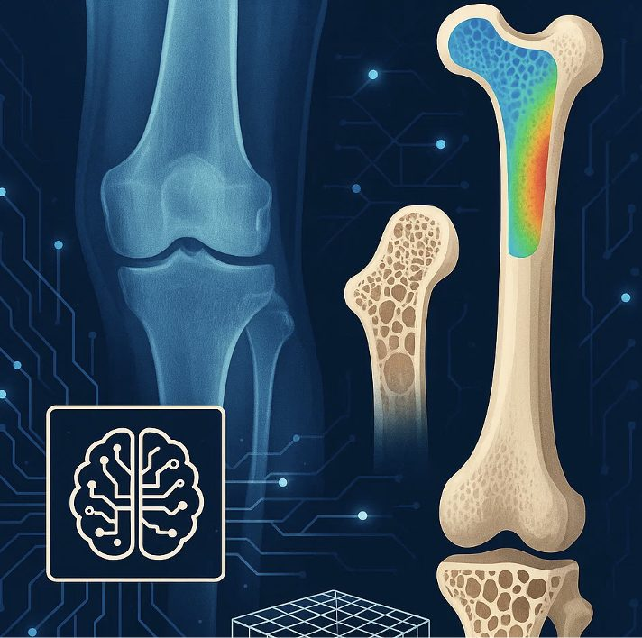

Imaging-based AI models for tissue mechanics
Fully developing D2IM by integrating additional AI strategies, advanced XCT segmentation models and the power of large language models. The goal is a model that reads a tomographic volume and returns the internal strain field directly, at a fraction of the cost of conventional digital volume correlation.